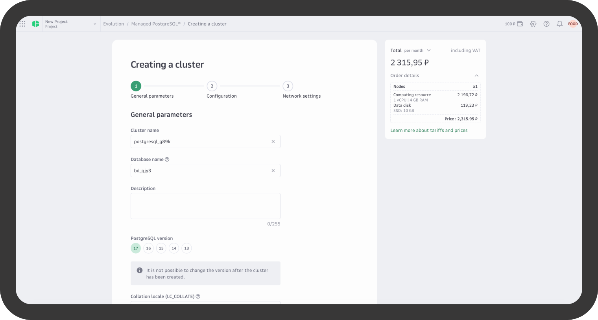
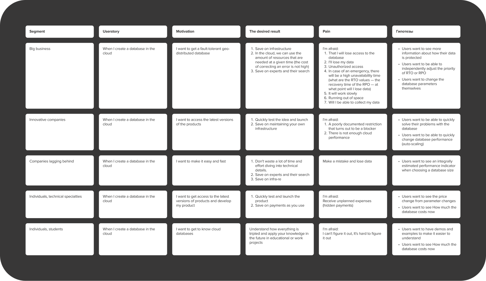
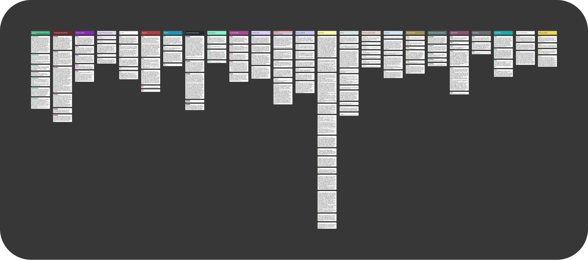
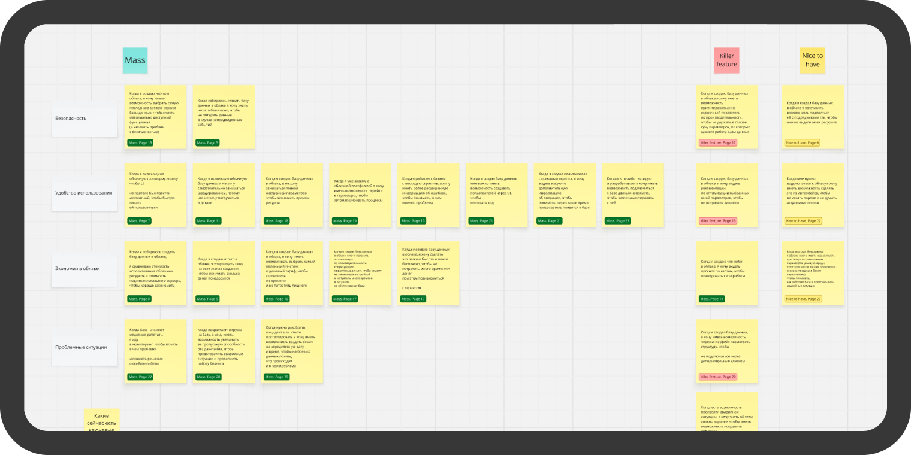
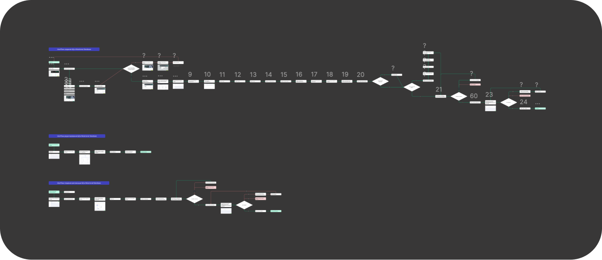
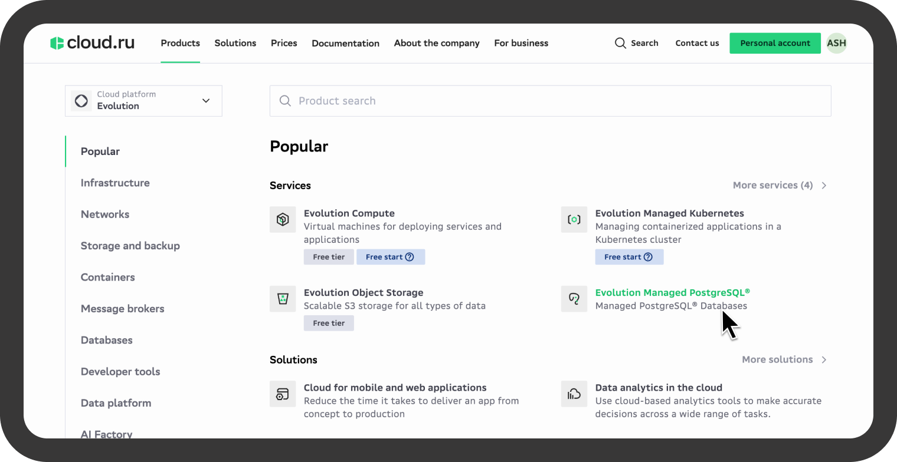

Managed PostgreSQL
Designing a customer-facing managed PostgreSQL cloud service

Overview
Platform V Pangolin & Managed PostgreSQL is a customer-facing cloud service offered on the cloud.ru platform.
It enables cloud customers to create, configure, and manage PostgreSQL clusters without deep involvement in infrastructure operations.
The service is designed for running PostgreSQL in production environments, focusing on reliability, safety, and predictable behavior.
Context & Challenge
Cloud.ru was launching a new managed PostgreSQL service for external cloud customers as part of its public cloud platform.
This product directly impacts:
- developer experience
- trust in the cloud platform
- customers’ willingness to run production workloads in the cloud
Key challenges:
- the service was designed from scratch
- the domain is technically complex (databases, HA, backups, recovery)
- multiple user roles with different goals and expertise
- strict constraints of an existing platform-wide design system
- high cost of UX errors (data loss, downtime, misconfiguration)
This was a customer-facing cloud product, not an internal tool — clarity, safety, and confidence were critical.
My Role
I worked as a Product Designer, leading discovery and design for the service.
My responsibilities included:
- gathering and structuring product and technical requirements
- planning and conducting research
- running user interviews and qualitative analysis
- defining and validating Job Stories
- competitive analysis of managed database services
- designing end-to-end user flows
- participating in design reviews and alignment with engineering teams
Users & Segmentation
Initially, users were described as a generic “DB administrator,” which risked oversimplifying real usage scenarios.
Through stakeholder interviews and early research, I defined key user segments within the cloud platform:
- Developers — want to quickly provision a database and start building
- DevOps / SRE — responsible for reliability, configuration, and incident response
- Tech Leads / Architects — make decisions about production readiness and cloud adoption
This segmentation became the foundation for discovery and design decisions.
Hypotheses & Job Stories
Based on the user segments, I formulated initial hypotheses and Job Stories, later validated through interviews.
Example:
When I launch a PostgreSQL cluster in the cloud,
I want to be confident that the default configuration is production-ready,
so I don’t need to deeply understand infrastructure details.
Job Stories were used as a decision-making tool, not just a documentation artifact.

User Interviews & Analysis
I:
- prepared interview guides tailored to each user segment
- conducted user interviews with cloud customers
- fully transcribed and tagged interview data
- grouped insights by themes and scenarios
This allowed us to move from assumptions to validated user needs and priorities.

Research Readout & Team Workshop
I presented research findings to the product and engineering teams and facilitated a workshop where we:
- aligned on key user insights
- discussed differences between user roles
- prioritized Job Stories
- connected user needs to the product backlog
This helped shift the team’s focus from purely technical requirements to real customer workflows.

Competitive Analysis
I conducted a detailed analysis of:
- Huawei Cloud’s managed PostgreSQL service
- UX approaches used by other cloud providers
The focus was on:
- end-to-end user scenarios
- number of steps and decision points
- clarity of system states
- prevention of critical user errors
The goal was not visual inspiration, but understanding how users reason about their databases.
User Flows & Scenarios
Based on research insights, technical constraints, and platform requirements, I designed key end-to-end user flows, including:
- PostgreSQL cluster creation
- cluster state management
- backup and recovery scenarios
- monitoring and diagnostics
All flows were reviewed and aligned with:
- product stakeholders
- backend engineers
- platform constraints

Final Solution
I worked within the existing cloud.ru design system, focusing on:
- clear and predictable user flows
- transparent system states
- reduced cognitive load
- prevention of critical misconfigurations
The primary design contribution was scenario clarity and decision safety, rather than visual customization.
Outcome
- the managed PostgreSQL service was launched and became available to cloud.ru customers
- customers gained access to a production-ready managed database as part of the cloud ecosystem
- the product was built around validated user workflows rather than abstract infrastructure assumptions
For a cloud service, this directly impacts adoption, trust, and long-term usage.

Key Learnings
- in cloud products, UX is closely tied to risk management
- design systems help scale decisions and consistency, not limit impact
- Job Stories are an effective bridge between product, design, and engineering in complex domains